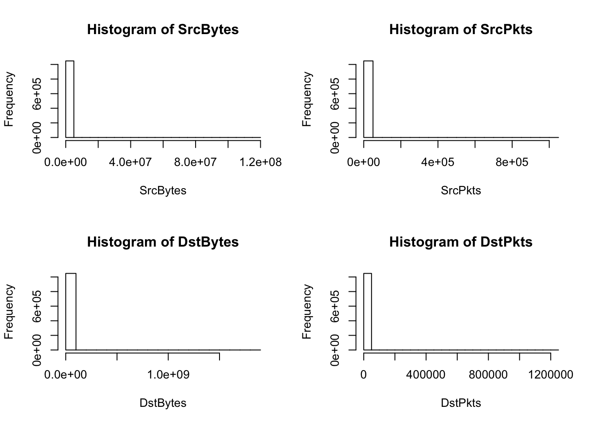
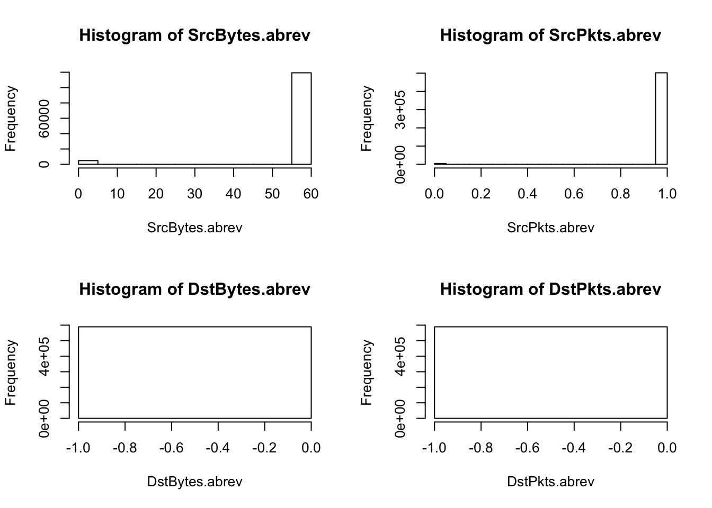

Chapter 3 Networks Dataset
3.1 Features
The networks dataset contains 13 features, 8 categorical and 5 continuous, and the observations are unlabeled (not specified whether they are considered a scanner). The 13 features are:
Continuous:
- StartTime (Start Time): the time when the observation is logged
- SrcBytes (Source Bytes): the total number of bytes sent in the observation
- SrcPkts (Source Packets): the number of packets sent in the observation
- DstBytes (Destination Bytes): the total number of bytes received in the observation
- DstPkts (Destination Packets): the number of packets received in the observation Note, the destination packets and bytes features do not have the same values as their source counterparts because the connections are compressed and decompressed into different forms and byte sizes when sent. For instance, it is possible for the number of destination packets to be larger than source packets. It is also possible for information to be lost during the connection.
Categorical:
- Flgs (connection flag): flow state flags seen in transaction between the two addresses
- Proto (network protocol): specifies the rules used for information exchange via network addresses. Transmission Control Protocol (TCP) uses a set of rules to exchange messages with other Internet points at the information packet level, and Internet Protocol (IP) uses a set of rules to send and receive messages at the Internet address level.
- SrcAddr (Source Address): the IP address of the connection’s source
- DstAddr (Destination Address): the IP address of the connection’s destination
- Sport (Source Port): the network port number of the connection’s source. A port numbers identifies the specific process to which a network message is forwarded when it arrives at a server.
- Dport (Destination Port): the network port number of the connection’s destination
- Dir (direction): the direction of the connection
- State (connection state): a categorical assessment of the current phase in the transaction that the timestamp is taken at ???
Note, the addresses have been anonymized for security reasons.
3.1.1 Argus and Data Nuances
Argus is the open source network security tool applied to network transactions that collects the data for the features. The Argus wiki and the OIT manual provides key insights into the structure and nature of the data. Specifically, the sessions are clustered together by address, so the pytes and packets values are accumulative over a set duration and each session has its own start time but does not have a tracked end time. There exist 2-4 million connections on average every 5 minutes. Furthermore the protocol in this dataset is always gathered from TCP protocol and the direction will always be to the right (i.e. Source to Destination). This information supports dropping proto, StartTime, and Direction from the dataset for future analysis because they do not present any information regarding whether an observation can be considered an anomaly. Furthermore, the State feature may not be reliable because Argus occasionally resets the state data statistics during monitoring.
3.2 Exploratory Data Analysis
3.2.1 Cleaning Predictors
argus = read.csv("data/argus-anon-20170201.csv")
summary(argus) StartTime Flgs Proto SrcAddr
11:05.6: 2611 * :794933 tcp:1048575 197.0.31.231: 35440
11:05.5: 2431 * s :126442 1.0.11.96 : 8717
11:06.5: 2420 * g : 31665 100.0.7.149 : 8526
11:05.7: 2404 * d : 21247 197.0.9.1 : 5536
11:04.7: 2152 * r : 17413 1.0.85.103 : 4976
11:06.4: 2079 * i : 10514 100.0.20.135: 3971
(Other):1034478 (Other) : 46361 (Other) :981409
Sport Dir DstAddr Dport
Min. : 0 ->:1036027 100.0.1.9 : 64508 Min. : 1
1st Qu.:13398 ?>: 1730 100.0.1.2 : 62681 1st Qu.: 25
Median :25860 <? : 3706 100.0.1.28 : 25780 Median : 443
Mean :29049 <?>: 7112 100.0.1.55 : 25641 Mean :10396
3rd Qu.:43950 100.0.18.93: 20766 3rd Qu.:29784
Max. :65535 100.0.18.99: 20509 Max. :65535
(Other) :828690
SrcPkts DstPkts SrcBytes
Min. : 0.0 Min. :0.00e+00 Min. : 0
1st Qu.: 1.0 1st Qu.:0.00e+00 1st Qu.: 64
Median : 2.0 Median :0.00e+00 Median : 136
Mean : 33.1 Mean :5.78e+01 Mean : 8943
3rd Qu.: 6.0 3rd Qu.:5.00e+00 3rd Qu.: 676
Max. :1008233.0 Max. :1.24e+06 Max. :118257047
DstBytes State
Min. :0.000e+00 ACC: 16815
1st Qu.:0.000e+00 CLO: 98
Median :0.000e+00 CON: 17146
Mean :7.526e+04 FIN:307337
3rd Qu.:5.960e+02 REQ:571899
Max. :1.851e+09 RST:135280
sapply(argus, class)StartTime Flgs Proto SrcAddr Sport Dir DstAddr
"factor" "factor" "factor" "factor" "integer" "factor" "factor"
Dport SrcPkts DstPkts SrcBytes DstBytes State
"integer" "integer" "integer" "integer" "integer" "factor" argus = transform(argus,
Sport = as.factor(Sport),
Dport = as.factor(Dport))
argus = subset(argus, select = c("Flgs", "SrcAddr", "Sport", "DstAddr", "Dport",
"SrcPkts", "DstPkts", "SrcBytes", "DstBytes", "State"))
attach(argus)
categorical = c("Flgs", "SrcAddr", "Sport", "DstAddr", "Dport", "State")
continuous = c("SrcPkts", "DstPkts", "SrcBytes", "DstBytes")This code casts the features to their corresponding class classifications (numeric and factor), and removes Proto, StartTime, and Diretion from the dataset.
3.2.2 Categorical Features: Unique Categories and Counts
sapply(argus, function(x) length(unique(x))) Flgs SrcAddr Sport DstAddr Dport SrcPkts DstPkts SrcBytes
70 65113 64486 41903 17537 2790 3633 44075
DstBytes State
64549 6 #function that returns elements of the feature and their counts in descending order
element_counts = function(x) {
dt = data.table(x)[, .N, keyby = x]
dt[order(dt$N, decreasing = TRUE),]
}
element_counts(Sport) x N
1: 33461 35683
2: 4263 8541
3: 80 8346
4: 4165 4988
5: 48468 3023
---
64482: 57904 1
64483: 58242 1
64484: 59051 1
64485: 59315 1
64486: 60116 1element_counts(Dport) x N
1: 23 235616
2: 80 204128
3: 443 137360
4: 32819 102166
5: 25 53167
---
17533: 65515 1
17534: 65528 1
17535: 65529 1
17536: 65532 1
17537: 65533 1element_counts(SrcAddr) x N
1: 197.0.31.231 35440
2: 1.0.11.96 8717
3: 100.0.7.149 8526
4: 197.0.9.1 5536
5: 1.0.85.103 4976
---
65109: 197.0.55.5 1
65110: 197.0.55.6 1
65111: 197.0.55.7 1
65112: 197.0.55.8 1
65113: 197.0.55.9 1element_counts(DstAddr) x N
1: 100.0.1.9 64508
2: 100.0.1.2 62681
3: 100.0.1.28 25780
4: 100.0.1.55 25641
5: 100.0.18.93 20766
---
41899: 100.0.6.179 1
41900: 100.0.7.173 1
41901: 100.0.77.113 1
41902: 100.0.77.147 1
41903: 100.0.88.111 1element_counts(State) x N
1: REQ 571899
2: FIN 307337
3: RST 135280
4: CON 17146
5: ACC 16815
6: CLO 983.2.3 Continuous Features: Distributions and Relationships
par(mfrow=c(2,2))
hist(SrcBytes); hist(SrcPkts); hist(DstBytes); hist(DstPkts) #clearly some very large values
largest_n = function(x, n){
head(sort(x, decreasing=TRUE), n)
}
largest_n(SrcBytes, 10) [1] 118257047 116615879 112673526 108933442 105793666 73376579 72839115
[8] 70001807 56206409 55359912largest_n(SrcPkts, 10) [1] 1008233 1000971 771590 492361 458603 437296 408530 407973
[9] 371976 371251largest_n(DstBytes, 10) [1] 1850817751 1713055847 1690162763 1524781880 1491609296 1340922625
[7] 1304668214 1206594243 1163954979 1145323438largest_n(DstPkts, 10) [1] 1239611 1223485 1219276 1004471 982931 942827 883354 795120
[9] 766776 754831The histograms and the largest 10 values in each of the continuous variables show that there are a relatively few amount of large observations skewing the distributions. This explains the model summary containing means much larger than their medians. It’s not possible to remove the large values as outliers because they may be scanner observations to detect. Also there is a high frequency (up to the first quartile) of destination bytes and packets that equal 0.
We will now try to investigate whether the largest continuous predictor values correspond to any particular addresses or ports.
max.SrcBytes = argus[with(argus,order(-SrcBytes)),][1:20,]
max.SrcPkts = argus[with(argus,order(-SrcPkts)),][1:20,]
max.DstBytes = argus[with(argus,order(-DstBytes)),][1:20,]
max.DstPkts = argus[with(argus,order(-DstPkts)),][1:20,]
head(max.SrcBytes) Flgs SrcAddr Sport DstAddr Dport SrcPkts DstPkts
282859 * s 1.0.12.1 18086 100.0.1.8 31743 208339 104886
282841 * s 1.0.12.1 18086 100.0.1.8 31743 204912 99688
282832 * s 1.0.12.1 18086 100.0.1.8 31743 198007 94621
282853 * s 1.0.12.1 18086 100.0.1.8 31743 191443 95892
282823 * s 1.0.12.1 18086 100.0.1.8 31743 186228 84342
724162 * * 100.0.4.9 37901 100.0.2.67 22 1008233 1239611
SrcBytes DstBytes State
282859 118257047 7514403 CON
282841 116615879 7146182 CON
282832 112673526 6801146 CON
282853 108933442 6857053 CON
282823 105793666 6048529 CON
724162 73376579 1713055847 CONhead(max.DstBytes) Flgs SrcAddr Sport DstAddr Dport SrcPkts DstPkts
2162 * d 197.0.1.1 62030 100.0.1.1 80 371251 1219276
724162 * * 100.0.4.9 37901 100.0.2.67 22 1008233 1239611
724106 * * 100.0.4.9 37901 100.0.2.67 22 1000971 1223485
2212 * d 197.0.1.1 62034 100.0.1.1 80 280593 1004471
78245 * d 1.0.2.1 11210 100.0.1.2 80 158194 982931
2185 * d 197.0.1.1 62033 100.0.1.1 80 268402 883354
SrcBytes DstBytes State
2162 26430322 1850817751 CON
724162 73376579 1713055847 CON
724106 72839115 1690162763 CON
2212 20037592 1524781880 FIN
78245 11294111 1491609296 CON
2185 19137354 1340922625 FINSource Addresses tend to be repetitive for the largest max bytes/packets, while ports vary. The top 10 largest DstBytes all correspond to SrcAddr 197.0.1.1 and DstAddr 100.0.1.1. Also both max Src and Dst rows correspond to the “* s”" flag. The largest sizes of DstBytes tend to go to Dport 80, which is the port that expects to receive from a web client (http), while the largest SrcBytes go to 31743. The next section implements a systematic way for investigating the relationship between addresses and ports because simply looking at the max rows is difficult.
3.2.4 Correlation Between Features
cor(SrcBytes, SrcPkts)[1] 0.5732968cor(DstBytes, DstPkts)[1] 0.996775cor(SrcBytes, DstBytes)[1] 0.3331221cor(SrcPkts, DstPkts)[1] 0.8448269The plots of the predictors suggest strong linear trends between the predictors, which makes intuitive sense given the domain matter. Further investigations show that DstPkts has a correlation of ~1 with DstBytes and ~0.85 with SrcPkts. Perhaps removing DstPkts as a feature would be useful.
cor(DstBytes, DstPkts, method = "kendall")
cor(SrcPkts, DstPkts, method = "kendall")
cor(DstBytes, DstPkts, method = "spearman")
cor(SrcPkts, DstPkts, method = "spearman")Because the original correlation tests relied on the Pearson method, which is susceptible to bias from large values, we conduct further tests to investigate the relationship between DstPkts and the other features. While the correlation is still high, it is no longer 1, so it is less cause for concern.
3.2.5 Transformations on the Data
3.2.5.1 Removing Quantiles
To get a better sense of the unskewed distribution, the below plots visualize the continuous features with the largest and smallest 10% of observations removed. The removed values will be readded to the dataset when investigating for anomalies.
remove_quantiles = function(v, lowerbound, upperbound){
return (v[quantile(v,lowerbound) >= v & v <= quantile(v,upperbound)])
}
SrcBytes.abrev = remove_quantiles(SrcBytes,0.10,0.9)
SrcPkts.abrev = remove_quantiles(SrcPkts,0.10,0.9)
DstBytes.abrev = remove_quantiles(DstBytes,0.10,0.9)
DstPkts.abrev = remove_quantiles(DstPkts,0.10,0.9)
par(mfrow=c(2,2))
hist(SrcBytes.abrev); hist(SrcPkts.abrev); hist(DstBytes.abrev); hist(DstPkts.abrev)
The continuous features are still unevenly distributed even with the 20% most extreme values removed.
3.2.5.2 Log Transformation
par(mfrow=c(2,2))
hist(log(SrcBytes)); hist(log(SrcPkts)); hist(log(DstBytes)); hist(log(DstPkts))
plot(log(SrcPkts), log(SrcBytes)); plot(log(DstPkts), log(DstBytes))
plot(log(SrcBytes), log(DstBytes)); plot(log(SrcPkts), log(DstPkts))A log transformation for each of the continuous features outputs right-skewed histograms. Skewed features may affect the results of a kernel pca, so we consider other approaches for transformations.
3.2.5.3 Normal Scores Transformation
nscore = function(x) {
# Takes a vector of values x and calculates their normal scores. Returns
# a list with the scores and an ordered table of original values and
# scores, which is useful as a back-transform table. See backtr().
nscore = qqnorm(x, plot.it = FALSE)$x # normal score
trn.table = data.frame(x=sort(x),nscore=sort(nscore))
return (list(nscore=nscore, trn.table=trn.table))
}
backtr = function(scores, nscore, tails='none', draw=TRUE) {
# Given a vector of normal scores and a normal score object
# (from nscore), the function returns a vector of back-transformed
# values
# 'none' : No extrapolation; more extreme score values will revert
# to the original min and max values.
# 'equal' : Calculate magnitude in std deviations of the scores about
# initial data mean. Extrapolation is linear to these deviations.
# will be based upon deviations from the mean of the original
# hard data - possibly quite dangerous!
# 'separate' : This calculates a separate sd for values
# above and below the mean.
if(tails=='separate') {
mean.x <- mean(nscore$trn.table$x)
small.x <- nscore$trn.table$x < mean.x
large.x <- nscore$trn.table$x > mean.x
small.sd <- sqrt(sum((nscore$trn.table$x[small.x]-mean.x)^2)/
(length(nscore$trn.table$x[small.x])-1))
large.sd <- sqrt(sum((nscore$trn.table$x[large.x]-mean.x)^2)/
(length(nscore$trn.table$x[large.x])-1))
min.x <- mean(nscore$trn.table$x) + (min(scores) * small.sd)
max.x <- mean(nscore$trn.table$x) + (max(scores) * large.sd)
# check to see if these values are LESS extreme than the
# initial data - if so, use the initial data.
#print(paste('lg.sd is:',large.sd,'max.x is:',max.x,'max nsc.x
# is:',max(nscore$trn.table$x)))
if(min.x > min(nscore$trn.table$x)) {min.x <- min(nscore$trn.table$x)}
if(max.x < max(nscore$trn.table$x)) {max.x <- max(nscore$trn.table$x)}
}
if(tails=='equal') { # assumes symmetric distribution around the mean
mean.x <- mean(nscore$trn.table$x)
sd.x <- sd(nscore$trn.table$x)
min.x <- mean(nscore$trn.table$x) + (min(scores) * sd.x)
max.x <- mean(nscore$trn.table$x) + (max(scores) * sd.x)
# check to see if these values are LESS extreme than the
# initial data - if so, use the initial data.
if(min.x > min(nscore$trn.table$x)) {min.x <- min(nscore$trn.table$x)}
if(max.x < max(nscore$trn.table$x)) {max.x <- max(nscore$trn.table$x)}
}
if(tails=='none') { # No extrapolation
min.x <- min(nscore$trn.table$x)
max.x <- max(nscore$trn.table$x)
}
min.sc <- min(scores)
max.sc <- max(scores)
x <- c(min.x, nscore$trn.table$x, max.x)
nsc <- c(min.sc, nscore$trn.table$nscore, max.sc)
if(draw) {plot(nsc,x, main='Transform Function')}
back.xf <- approxfun(nsc,x) # Develop the back transform function
val <- back.xf(scores)
return(val)
}SrcBytes_norm = nscore(SrcBytes)$nscore
SrcBytes_table = nscore(SrcBytes)$trn.table
SrcPkts_norm = nscore(SrcPkts)$nscore
SrcPkts_table = nscore(SrcPkts)$trn.table
DstBytes_norm = nscore(DstBytes)$nscore
DstBytes_table = nscore(DstBytes)$trn.table
DstPkts_norm = nscore(DstPkts)$nscore
DstPkts_table = nscore(DstPkts)$trn.table